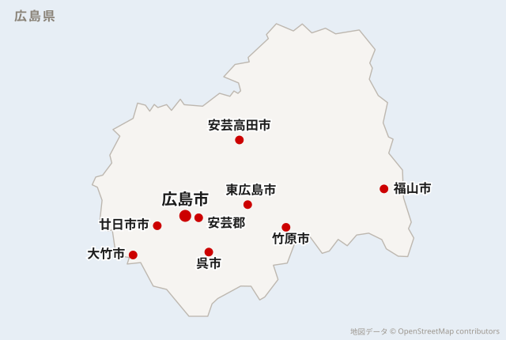

会社概要
私たち広島ロードサービス株式会社は、多様化するロードサービスの一歩先を行く企業として、お客様・行政・地域社会に頼られる存在を目指しています。
詳しく見る広島ロードサービス株式会社｜広島県を中心に、お客様に寄り添うロードサービス業で地域社会に貢献する
サイトマップ24時間365日対応
軽貨物・トラックから乗用車まで
バッテリー上がり・故障・事故・レッカー搬送まで
広島県内のロードサービスに迅速対応
お電話・公式LINEでお気軽にお問い合わせください
車のトラブルのことなら お電話1本でスピード解決！
24時間365日対応
6,000円〜（税込）
ジャンピングでエンジン始動
6,000円〜（税込）
給油して走れる状態に（燃料代は別）
※ 距離や作業内容によって料金は異なります。
※ それ以外の作業については、公式LINEまたはお電話でご相談ください。
自動車保険・JAF・クレジットカードのロードサービスが使えるなら、お客様のお支払いが0円になることがあります。
加入しているか分からなくても大丈夫です。お電話でこちらが確認します。
バッテリー上がり・ガス欠6,000円〜
作業は現場の状況で変わるので、作業の前に金額をお伝えします。
保険会社との話し合いになります。お客様が立て替えずに済むことも多いので、まずはお電話ください。
作業の前に必ず金額をお伝えします。
お電話で状況を教えていただければ、おおよその金額をその場でお伝えできます。聞くだけでも構いません。
対応できる車両
※ 2tトラックまで／EV（電気自動車）は対応していません
急な出費が痛いことは分かっています。作業の前に必ず金額をお伝えします。
車が止まる日は、仕事も止まります。修理の間、軽バンの代車をお貸しできます。
乗用車だけではありません。2tトラック・箱車・冷凍車まで対応します。
レッカーで運ぶだけではありません。
その場で直せるものは、現場で直します。
「これは呼んでいいのかな」と迷ったら、まずお電話ください。
代車のご用意
修理が終わって車が戻るまでの間、軽バンをお貸しできます。
車を運んでもらえても、積む車がなければ荷物は止まったままです。そこまで含めてご相談ください。
※ 台数に限りがあるため、空き状況によります。お電話のときに「代車もお願いしたい」とお伝えください。料金・貸出の条件はその場でご案内します。
広島市内全域を中心に、近隣の市町へも出動しています。
エリア外に見えても、まずはお電話でご相談ください。

はじめての方でも大丈夫です。電話口でこちらから順番にお聞きします。
安全な場所に避難してからおかけください。
到着までの目安時間をお伝えします。到着まで、車内ではなく安全な場所でお待ちください。
現場で直せるかどうかを確認し、作業内容と金額をお伝えしてから作業に入ります。
作業完了後にお支払いいただきます。このあとの手続きについてもご案内します。
車のトラブルのことなら お電話1本でスピード解決！
24時間365日対応
同じ車両で繰り返しご依頼いただく方には、車両の情報を控えておきます。2回目からは「いつもの車です」で話が通るので、やりとりが短く済みます。
※ 条件はご相談ください。まずはお電話で「よく使うことになりそう」とお伝えいただければ大丈夫です。
私たち広島ロードサービス株式会社は、多様化するロードサービスの一歩先を行く企業として、お客様・行政・地域社会に頼られる存在を目指しています。
詳しく見る